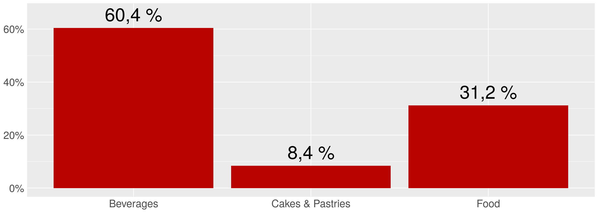
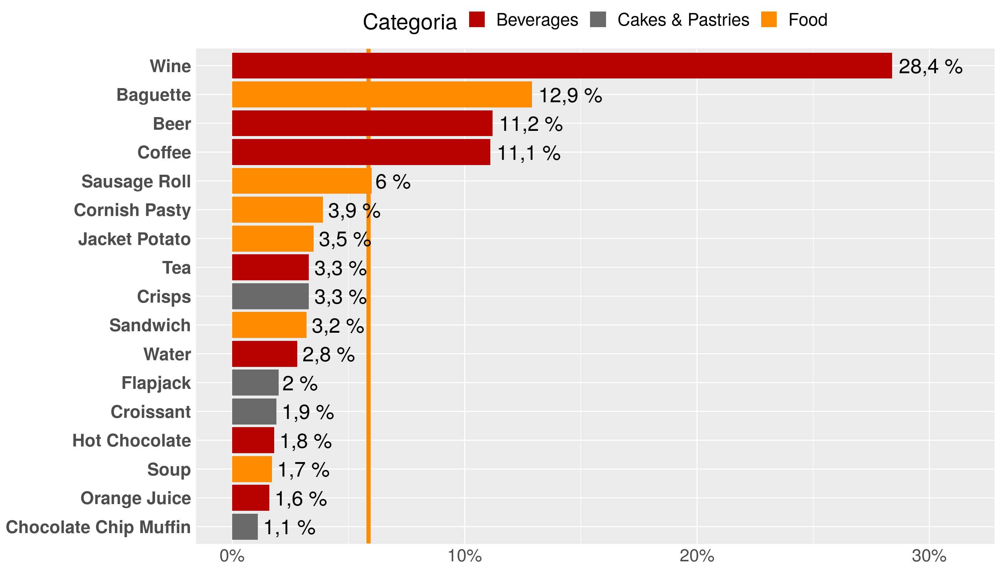
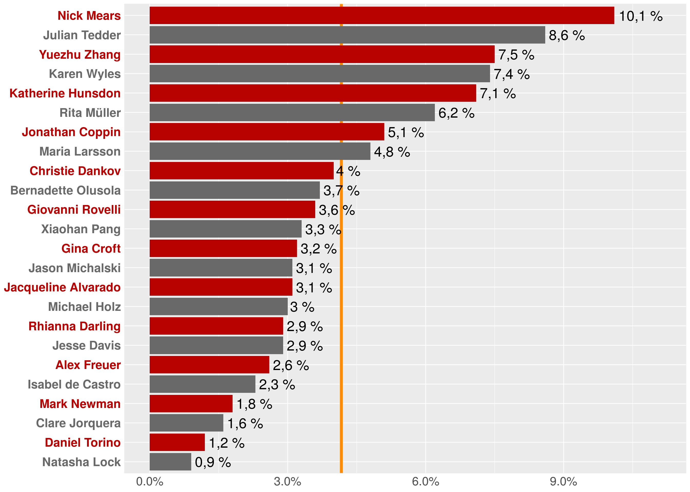

Éste año se han vendido 139.108 productos, por un valor de 373.257,9 €
Lo cual representa un incremento del 32,4%
El siguiente gráfico recoge el volumen de ventas por categoría.

Vemos que la mayoría de las ventas corresponden a bebidas. A continuación, el porcentaje del total de ventas que representa cada producto.

Los 4 productos más vendidos acumulan el 63,6% de las ventas
El siguiente gráfico representa el porcentaje del total de ventas que se debe a cada vendedor. Dado que hay 24 vendedores, cada uno debería vender el 4,2% en promedio (línea naranja).

8 vendedores son responsables del 56,8% de las ventas
Hay 24 vendedores